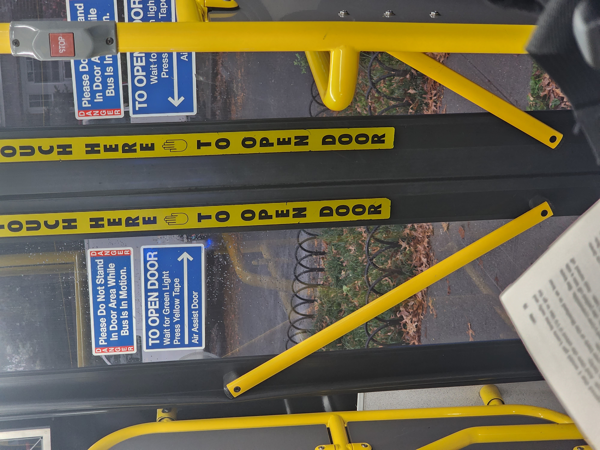

I have a lot of regard for MTA workers. Many of them are severely traumatized by
their line of work. I dont know how they survive driving the bus all day. I dont
know how subway workers survive being underground all day. It seems anti human
to me.
